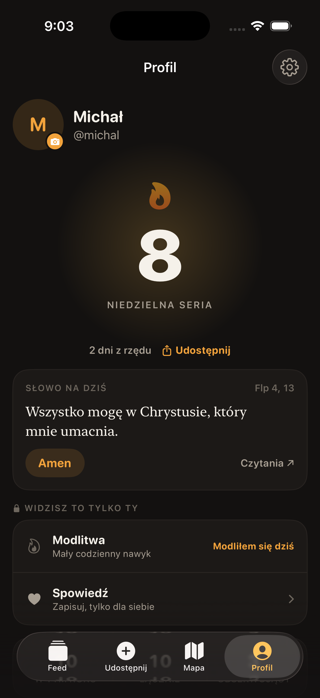
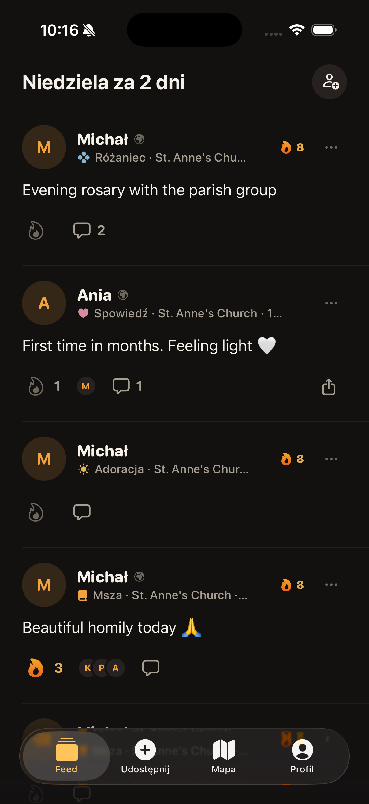
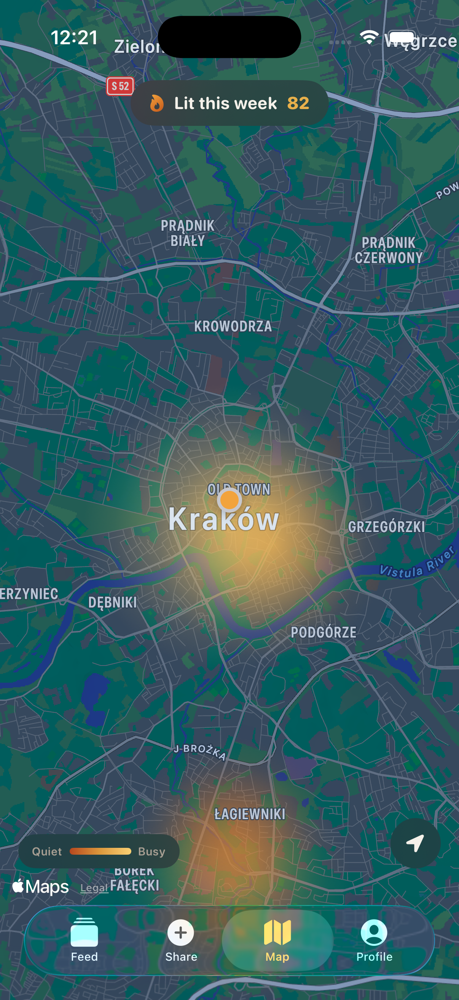
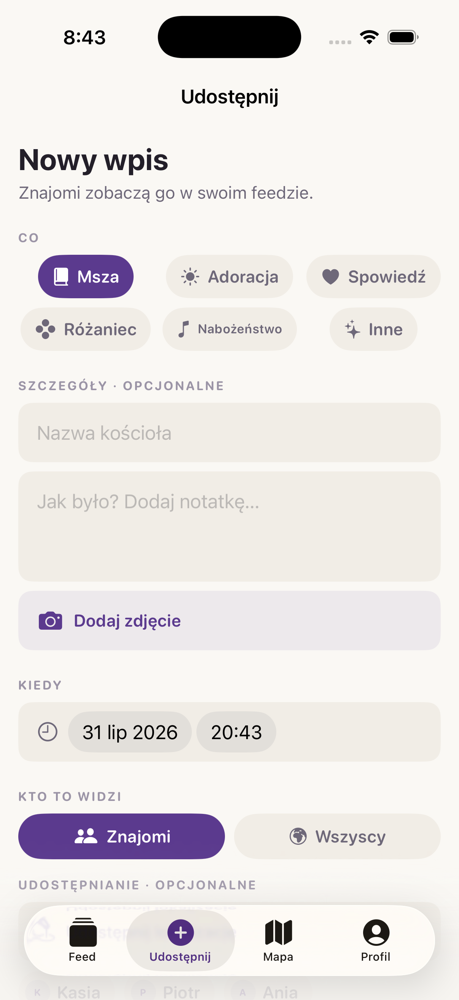

Zapisz, że byłeś. Zobacz, że znajomi też byli. Trzymajcie serię razem — tak jak na Stravie, tylko w niedzielę.
Damy znać, gdy ruszy TestFlight. Zero spamu.


Jak to działa
Otwierasz, klikasz, gotowe. Reszta dzieje się sama: seria rośnie, znajomi widzą, kalendarz się zapełnia.
Każda niedziela z rzędu to +1. Msza z soboty wieczorem też się liczy.
Widzisz, kto był, gdzie i z kim. Wysyłasz ogień zamiast lajka.
Modlitwa i spowiedź zapisują się prywatnie. Nikt inny ich nie widzi. Nigdy.
Mapa
Publiczne wpisy tworzą mapę ciepła Twojego miasta — im jaśniej, tym więcej osób było w tym tygodniu. Kliknij i zobacz, co się działo.

Słowo na dziś
Po polsku i po angielsku, prosto z Pisma. Odhaczasz „Amen", gdy się pomodlisz — i to też ma swoją serię.
„Wszystko mogę w Chrystusie, który mnie umacnia."
Flp 4, 13
Opinie
Aplikacja jest w fazie testów — tu wylądują prawdziwe opinie osób, które jej używają.
Wklej tu prawdziwy cytat od pierwszego testera.
Najlepsze cytaty to konkret: co się zmieniło po miesiącu używania.
Zapytaj testerów po dwóch tygodniach — wtedy mają już serię.
FAQ
Aplikacja niczego nie ocenia i nie punktuje pobożności. Robi jedno: pomaga pamiętać i nie być samemu. Nieobecności nikt nie widzi — nie ma rankingów „kto lepszy".
Domyślnie tylko znajomi. Każdy wpis możesz oznaczyć jako publiczny — wtedy trafia na mapę. Konto da się w całości ustawić jako prywatne.
Zawsze prywatne. Zapisują się tylko w Twoim kalendarzu i nie ma żadnego sposobu, żeby ktoś inny je zobaczył.
Nic. Powstaje po godzinach, dla wspólnoty.
Najpierw TestFlight dla zapisanych, potem App Store. Zostaw maila powyżej, damy znać.